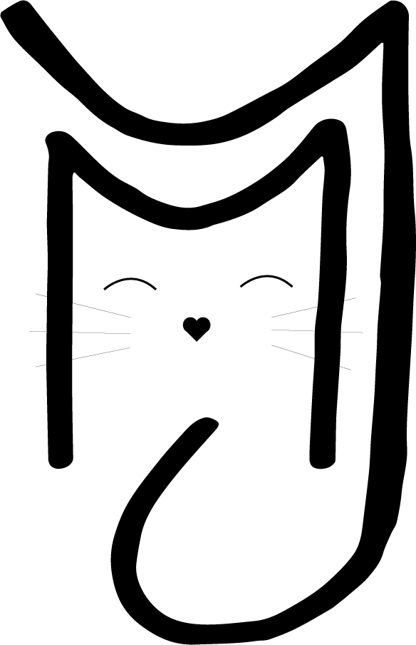
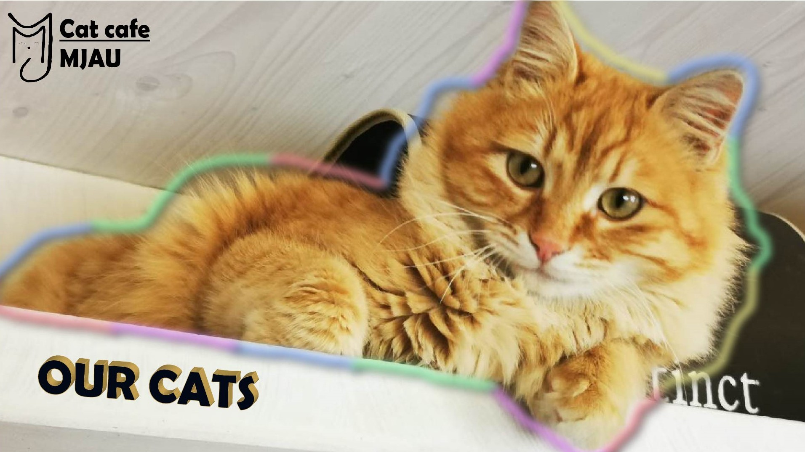
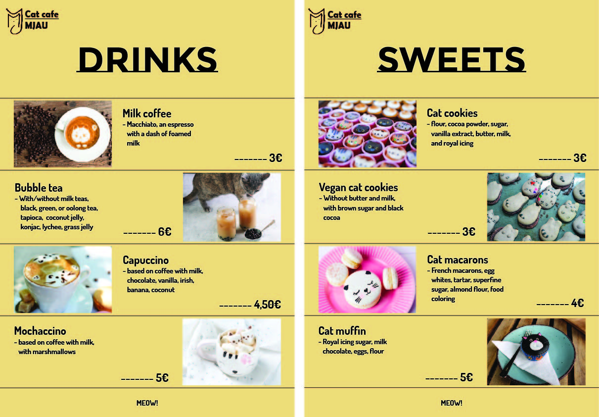

Dala sam se u izazov i odlučila napravila jednostavnu stranicu koristeći html, css i malo jave script. Mislim da sam napravila dugačiju stranicu od primjera jer sam si ja i zadala neku izmišljenju temu, ali slika, video, tekst, grafika i zvuk su tu. Ostavljam cijeli zip file ovdje da se može skinuti i s time možete pristupiti html-u.
Uzela sam svoje inicijale - MJ i od toga sam napravila obris 2 mačke, jedna kako grli drugu repom, to sam najprije napravila na papiru i onda sam samo sa brushom precrtala u illustratoru 2022.
Napravila sam thumbnail koji je na videu "our cats" na stranici About us. To sam napravila tako što sam uzela jednu sliku, dodala tekst, stavila mu boju i obrub i zatim sam otišla u Effects > 3D classic > Extrude and bevel, te sam tamo napravila 3D efekt po svojoj želji. Nakon što sam to napravila dodala sam logotip i naziv svog cat cafe-a u jedan kut. Kad sam to sve napravila uzela sam Blob brush tool i s njime povlačila crte oko mačke. Kad sam napravila obrub, označila sam ga te sam otišla u Effects > Stylize > Drop shadow, i tamo sam podesila sjenu, nakon toga sam dodala blur tako što sam otišla u Effects > Blur > Gaussian blur.
Za meni sam napravila 2 artboarda u illustratoru, stavila na oba žučkastu pozadinu, zatim sam dodala logotip i naziv cat cafe-a. Nakon toga sam krenula dodavat slike i stavljat linije između njih kako bi ih odvojila, nakon toga sam dodala i tekst. Ta 2 artboarda sam exportala skupa i tako ih stavila na stranicu
Dakle video "our cats" sam napravila u After effects-u. U after effects-u radim već 5 godina tako da mi je ovo bilo jako jednostavno za napraviti. Dakle napravila sam kompoziciju i u nju dodala zvuk koji sam ja još sama namještala (fade in i fade out), sve slike i videe, te sam tekst. Za edit sam koristila Sapphire plug-in koristeći dakle BlurMoCurves, i pod time "Z dist" (scale), "rotation", "x move" i "y move". Prijelazi su naravno bili mogući radi key frame-ova.
Zvuk iz pjesme: PAWSA - THE GROOVY CAT [PAWZ004]
Za zvuk sam snimila preko mobitela sebe kako govorim "Welcome to our cat cafe, where purs and lattes blend in perfect harmony" i još sam snimila svog mačka kako prede. Otvorila san Adobe Audition i započela novi Multitrack mixdown, tamo sam dodala svoje snimke i još isječak iz pjesme PAWSA - THE GROOVY CAT [PAWZ004]. Malo sam podesila zvukove i pojačala decibele na mojim snimcima i to sam sve spojila i exportala.
Napravila Maria Jovanovac, DAK, 1. godina.